3 Well Data File Formats
3.1 Introduction
Well log and petrophysical data come in several data formats. In many of my articles I have shared, we have mainly worked with CSV and LAS files. These formats are simple and easy to work with due to their flat structure. However, these files work well for simple logs, but not for array data. In LAS and CSV files, arrays get split into multiple columns rather than stored as a single block. DLIS files were designed to handle this complexity.
3.2 LAS Files
3.2.1 What is a LAS file?
At its core, a LAS file is simply a plain-text file designed to store well log data in a way that can be shared between companies, software packages, and decades of technology change.
The name comes from the Log ASCII Standard. That last bit matters: this isn’t a binary or fancy proprietary format. It’s raw text, which makes it human readable, scriptable, and durable.
This also means that they are flat files that can easily be opened and read within a simple text editor allowing you to read the contents without any specialised software.
This simplicity is the reason LAS has survived for so long, and also the reason it sometimes feels a bit too simplistic, especially when it comes to working with multi-dimensional arrays.
A typical LAS file contains:
- Metadata about the well, including field name, well name, location, and company
- Sometimes more detailed well metadata including information about mud types and processing parameters
- Information about each log curve, including units, descriptions and mnemonics
- Depth or time indexed logging measurements
3.2.2 A short history of LAS
The LAS standard emerged in the late 1980s, championed by industry groups like the Canadian Well Logging Society. At the time, the problem was painfully simple: companies were exchanging well logs on floppy disks, magnetic tapes, even printed listings. Without a solid standard, data would get mangled in transit, curves renamed, units lost, depth references shifted.
So the industry codified something basic, but workable across a variety of platforms. The idea wasn’t to build a full data model, it was to reduce the risk of information loss every time data changed hands.
Over the years a few versions of LAS have appeared:
LAS 1.2: The oldest variant released in 1989. It’s rigid and minimal. Many older files still in circulation are LAS 1.2.
LAS 2.0: The most commonly used today and released in 1992. It introduces more flexibility, better curve headers, clearer units, slightly more formal metadata handling. LAS 2.0 remains the most dominant version in use today.
LAS 3.0: Ambitious and richer version of LAS, with support for objects and more complex metadata released in 1999. In principle it modernises what LAS can express, but in practice adoption has been limited. Many tools and workflows still treat LAS 3.0 support as optional or partial.
In practice, the real world of LAS is messy: the standard sets the intended structure, but files from different vendors or vintage wells often bend those rules. Part of working with LAS (especially in code) is recognising that reality.
3.2.2.1 Why LAS endures
Despite its age and quirks, LAS is still the lingua franca of well logs for a few reasons:
- It’s text. You don’t need special software to inspect it.
- It’s ubiquitous. Virtually every subsurface package supports the basics.
- It’s simple. There’s only so much you can do wrong before a human notices.
That doesn’t make it perfect, but it just makes it practical. And that’s why libraries like lasio exist: to bridge between this old-school format and modern Python workflows.
3.2.3 The LAS 2.0 format
Most LAS files you’ll encounter today follow LAS version 2.0. Understanding what LAS 2.0 expects helps explain both why files are structured the way they are.
At a high level, a LAS 2.0 file is a structured ASCII text file. It contains:
- A header made up of multiple sections
- Followed by a single block of log data
LAS 2.0 is deliberately conservative about character encoding. It allows:
- Carriage return (ASCII 13) and line feed (ASCII 10) for new lines
- Standard printable ASCII characters (ASCII 32 to ASCII 126)
Having this standard matters, as LAS files were designed to survive being moved between operating systems, software packages, and even through decades. If a LAS file breaks, it’s usually because something ignored this rule or there has been .
3.2.3.1 One continuous interval per file
A key constraint in LAS 2.0 is that each file contains only one continuous data interval.
In practical terms:
- A main pass and a repeat pass should be separate files
- You shouldn’t expect multiple depth intervals stitched together in one
~Asection
Real data doesn’t always behave, but this assumption is baked into many tools — including how libraries like lasio interpret the file.
3.2.3.2 File naming and recognition
LAS files conventionally end with .las.
3.2.3.3 Sections and the tilde rule
A LAS file is divided into multiple sections, each introduced by a line beginning with a tilde (~) as the first non-space character.
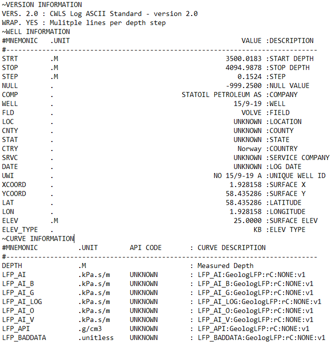
The character immediately after the tilde identifies the section type. In LAS 2.0, the reserved section identifiers are:
~V— Version information: This tells you what version the LAS file is written in and how the rest of the file should be interpreted.~W— Well information: This section contains metadata about the well and the logging run, not the logs themselves. This includes the location of the well, start and stop depth of the file, field name.~C— Curve information: This section defines what each curve actually is and is split into: Curve Mnemonic, Units and a Short Description~P— Parameters: This section provides information about run-level parameters, tool settings, environmental corrections and processing constants. However, this section is not always present.~O— Other information: This section can include processing comments, notes from the logging engineer, remarks. This section may also be left blank or absent from the file.~A— ASCII data: This is the section that contains all of the measurements for the curves listed in the~Csection. Each row represents one depth level. In some instances data rows can be wrapped to reduce the amount of horizontal scrolling required.
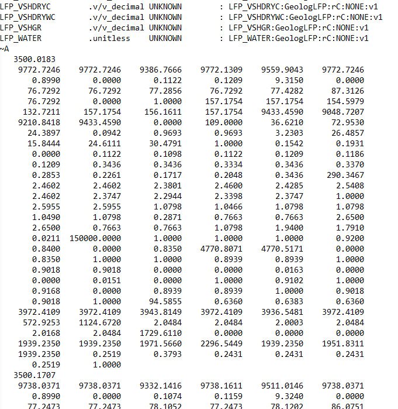
Each of these sections may appear only once per file.
Custom sections are allowed, but they must appear:
- After the
~Vsection - Before the final
~Asection
This ordering is important.
3.2.3.5 Header line structure
Several header sections — VERSION, WELL, CURVE, and PARAMETER use a specific line structure built around delimiters.
Each line is split using:
- The first dot (
.) - The first space after that dot
- The final colon (
:)
This gives you, in order:
- A mnemonic
- Units
- A value
- A description
You don’t need to memorise the delimiters, but it helps to know they exist. When headers look odd, or units go missing, it’s usually because one of these delimiters has been missed.
3.2.4 Reading LAS Files with Python Using LASIO
There are a number of Python libraries available that can work with LAS files, but the most common is lasio.
lasio library developed by Kent Inverarity, to load a las file into Python and then explore its contents.
3.2.5 Installing and importing lasio
After understanding how LAS files are structured, the next step is load the data into Python in a way that can preserve this structure without flattening it into an anonymous table.
If you don’t already have lasio installed, it’s available via pip:
pip install lasioOnce installed, it is common to work with lasio alongside numpy and pandas:
import pandas as pd
import matplotlib.pyplot as plt
import lasio3.2.6 Reading a LAS file
Reading a LAS file is very simple, and can be done using the .read() method from lasio:
las = lasio.read("path/to/well.las")At this point lasio has simply parsed the file according to the LAS standard and exposed its contents. There is no resampling to changing of the data happening.
If you are working with older files or vendor exports, you may occasionally need to specify an encoding explicitly:
las = lasio.read("path/to/well.las", encoding="latin-1")3.2.7 A Quick Contents Check
Before touching the las data, it’s worth asking a basic question: what did I actually load?
You can do that in a few simple ways.
A simple print statement will return back the lasio object
print(las)<lasio.las.LASFile object at 0x000001383BA7E100>Which doesn’t not reveal very much, but shows that a lasio LASFile object has been created.
To see what curves are available:
[c.mnemonic for c in las.curves]['DEPTH',
'LFP_AI',
'LFP_AI_B',
'LFP_AI_G',
'LFP_AI_LOG',
'LFP_AI_O',
'LFP_AI_V',
'LFP_API',
'LFP_BADDATA',
'LFP_BVWE',
'LFP_BVWT',
'LFP_CALI',
'LFP_COAL',
'LFP_DT',
'LFP_DT_B',
'LFP_DT_G',
'LFP_DT_LOG',
'LFP_DT_O',
'LFP_DT_SYNT',
'LFP_DT_V',
'LFP_DTCORFSFLAG',
'LFP_DTLOGFLAG',
'LFP_DTS',
'LFP_DTS_B',
'LFP_DTS_G',
...
'LFP_VSHDRY',
'LFP_VSHDRYC',
'LFP_VSHDRYWC',
'LFP_VSHGR',
'LFP_WATER']And to inspect curve names, units, and descriptions together:
for c in las.curves:
print(f"{c.mnemonic:>8} {c.unit:>8} {c.descr}")DEPTH M Measured Depth
LFP_AI kPa.s/m v1
LFP_AI_B kPa.s/m v1
LFP_AI_G kPa.s/m v1
LFP_AI_LOG kPa.s/m v1
LFP_AI_O kPa.s/m v1
LFP_AI_V kPa.s/m v1
LFP_API g/cm3 v1
LFP_BADDATA unitless v1
LFP_BVWE v/v_decimal v1
LFP_BVWT v/v_decimal v1
LFP_CALI inches v1
LFP_COAL unitless v1
LFP_DT us/ft v0 (auto-composite)
LFP_DT_B us/ft v1
LFP_DT_G us/ft v1
LFP_DT_LOG us/ft v0 (auto-composite)
LFP_DT_O us/ft v1
LFP_DT_SYNT us/ft v1
LFP_DT_V us/ft v1
LFP_DTCORFSFLAG unitless v1
LFP_DTLOGFLAG unitless v1
LFP_DTS us/ft v0 (auto-composite)
LFP_DTS_B us/ft v1
LFP_DTS_G us/ft v1
...
LFP_VSHDRYC v/v_decimal v1
LFP_VSHDRYWC v/v_decimal v1
LFP_VSHGR v/v_decimal v1
LFP_WATER unitless v1This is often the first place you discover duplicated curves, unexpected units, or naming inconsistencies.
3.2.8 Understanding the index curve
LAS files typically use depth (or time) as an index. lasio makes this explicit:
las.index
las.index_unitarray([3500.0183, 3500.1707, 3500.323 , ..., 4094.6831, 4094.8354,
4094.9878])
'M'Knowing the index curve and its units early avoids subtle mistakes later, especially when combining data from multiple wells.
3.2.9 Inspecting Header Metadata
We can also inspect the header metadata from the LAS file, for example the well section (**~W**):
for item in las.well:
print(item.mnemonic, item.unit, item.value, "-", item.descr)STRT M 3500.0183 - START DEPTH
STOP M 4094.9878 - STOP DEPTH
STEP M 0.1524 - STEP
NULL -999.25 - NULL VALUE
COMP STATOIL PETROLEUM AS - COMPANY
WELL 15/9-19 - WELL
FLD VOLVE - FIELD
LOC UNKNOWN - LOCATION
CNTY UNKNOWN - COUNTY
STAT UNKNOWN - STATE
CTRY Norway - COUNTRY
SRVC UNKNOWN - SERVICE COMPANY
DATE UNKNOWN - LOG DATE
UWI NO 15/9-19 A - UNIQUE WELL ID
XCOORD 1.928158 - SURFACE X
YCOORD 58.435286 - SURFACE Y
LAT 58.435286 - LATITUDE
LON 1.928158 - LONGITUDE
ELEV M 25.0 - SURFACE ELEV
ELEV_TYPE KB - ELEV TYPEThe header is where you’ll often find:
- Start and stop depths
- Step size
- Field name
- Company name
- Well Location
- The NULL value used in the file
That NULL value is particularly important:
null_item = las.well.get("NULL")
null_itemHeaderItem(mnemonic="NULL", unit="", value="-999.25", descr="NULL VALUE")This tells us that any -999.25 values in the data section should be treated as missing data.
3.2.10 Accessing Curve Data
You can access individual curves by mnemonic:
las["GR"]array([36.621, 36.374, 30.748, ..., nan, nan, nan])Or pull multiple curves together into a numpy array:
curves = ["DEPTH", "GR", "DTS"]
data = np.vstack([np.asarray(las[c]) for c in curves]).Tarray([[3500.0183, 36.621 , 157.1754],
[3500.1707, 36.374 , 158.9566],
[3500.323 , 30.748 , 159.7642],
...,
[4094.6831, nan, 128.407 ],
[4094.8354, nan, 127.217 ],
[4094.9878, nan, 127.758 ]])Depth values are available separately via the index:
depth = np.asarray(las.index)array([3500.0183, 3500.1707, 3500.323 , ..., 4094.6831, 4094.8354,
4094.9878])At this stage you are working with raw numerical arrays, but still tied back to curve definitions and metadata.
3.2.11 Displaying LAS File Data in Other Formats
3.2.11.1 Displaying curve data and information using pandas
For the majority of data analysis tasks, a pandas DataFrame is a common and is also often the the most convenient way to represent tabular data.
lasio provides a way to convert the data section to a DataFrame directly:
df = las.df()
df.head()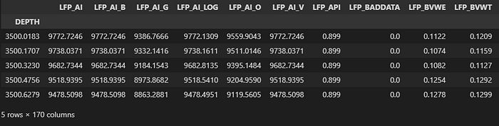
By default:
- The index is depth or time
- Columns are curve mnemonics
If you prefer the index as a column:
df = df.reset_index()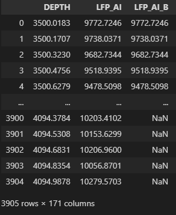
In addition to creating DataFrames of the curve data, we can quickly and easily construct them using the other metadata. For example, if we want to present the Curve Information section as a DataFrame:
curve_table = pd.DataFrame(
[{"mnemonic": c.mnemonic, "unit": c.unit, "description": c.descr}
for c in las.curves]
)
curve_table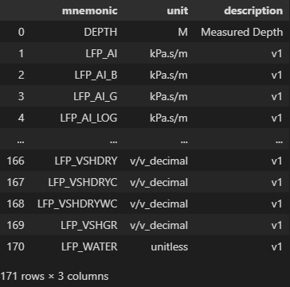
3.2.12 Inspecting LAS Files in the Terminal with Rich
Once you start inspecting LAS files regularly, printing curve metadata line by line gets old quickly. It’s not especially readable, particularly when you’re dealing with dozens of curves or comparing files.
Inspection isn’t the most exciting part of any data-based workflow, but it’s where most silent assumptions creep in. Problems like unexpected units, duplicate or synthetic curves, anomalous NULL values, and sparsely populated curves often only emerge after significant investment in downstream processing.
This is where the rich library comes in handy. It lets you display structured information in the terminal in a way that’s clear, readable, and surprisingly effective for quick sanity checks. By combining lasio and rich, you can build a lightweight inspection step that catches these issues early, before they propagate into plots, models, or reports.
If you don’t already have it installed:
pip install richThen import the bits we need:
from rich.console import Console
from rich.table import Table3.2.12.1 Displaying curve information
We can take the curve metadata already exposed by lasio and render it as a formatted table:
console = Console()
table = Table(title="LAS Curve Summary")
table.add_column("Mnemonic", style="cyan", no_wrap=True)
table.add_column("Unit", style="green")
table.add_column("Description", style="white")
for c in las.curves:
table.add_row(
c.mnemonic,
c.unit or "",
c.descr or ""
)
console.print(table)This gives a clean, scrollable summary of curve mnemonics, units, and descriptions — all in one place, without having to mentally align columns of printed text.
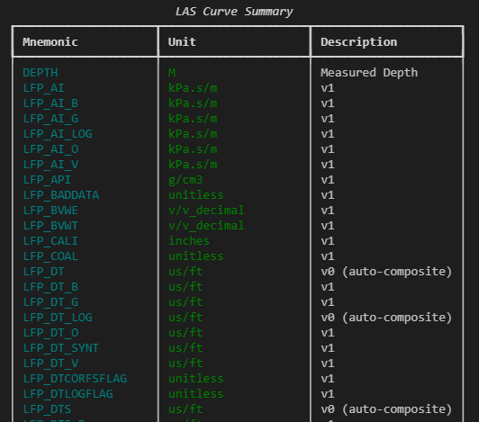
3.2.12.2 Inspecting header sections
A reusable helper function makes it easy to present any header section clearly:
def print_header_table(title, section):
table = Table(title=title)
table.add_column("Mnemonic", style="cyan", no_wrap=True)
table.add_column("Unit", style="green")
table.add_column("Value", style="yellow")
table.add_column("Description", style="white")
for item in section:
table.add_row(item.mnemonic, item.unit or "",
str(item.value), item.descr or "")
console.print(table)This can be used with any header section:
print_header_table("Well Information", las.well)
print_header_table("Parameters", las.params)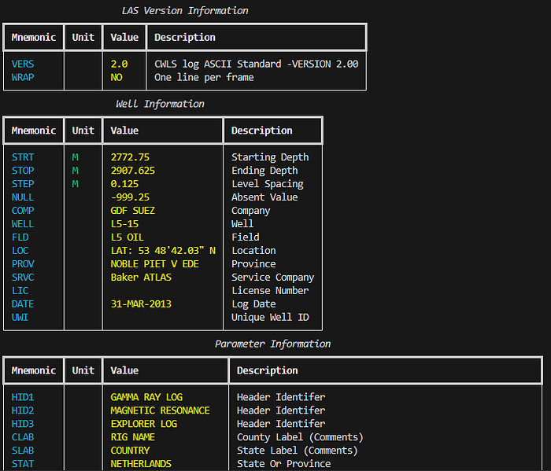
3.2.12.3 Assessing data completeness
Colour-coded output can help quickly identify which curves are usable and which are mostly empty:
table = Table(title="LAS Curve Summary (with completeness)")
table.add_column("Mnemonic", style="cyan", no_wrap=True)
table.add_column("Unit", style="green")
table.add_column("Missing %", justify="right")
table.add_column("Description")
for c in las.curves:
mnemonic = c.mnemonic
if mnemonic not in df.columns:
table.add_row(mnemonic, c.unit or "", "—",
c.descr or "", style="dim")
continue
values = df[mnemonic]
missing_frac = values.isna().mean()
if missing_frac > 0.18:
style = "red"
elif missing_frac > 0.15:
style = "yellow"
else:
style = "green"
table.add_row(mnemonic, c.unit or "", f"{missing_frac:.0%}",
c.descr or "", style=style)
console.print(table)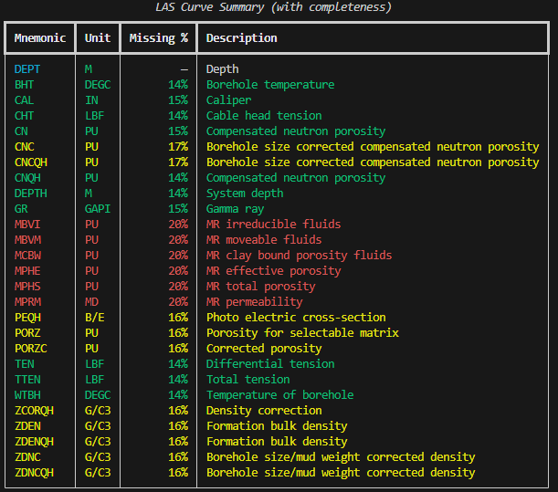
The colour coding strategy is straightforward:
- Green: largely complete curves (usable)
- Yellow: partially populated (may need attention)
- Red: mostly missing (generally unusable)
- Dimmed: not in DataFrame (index curves or duplicates)
This shift in workflow: loading, inspecting structure and metadata, deciding what’s usable, and only then proceeding to plots or models prevents silent assumptions from propagating downstream. It leads to cleaner workflows and fewer surprises later on.
3.2.13 Visualising Well Log Data Availability
When working with well log data, one of the first things you want to know isn’t what the data looks like, it’s whether the data is even there.
The previous section answers “what’s in this file?”, but a harder question follows: where is the data, and where isn’t it?
A curve showing 85% completeness overall can be misleading. If missing data clusters around a critical reservoir interval, that statistic obscures the real issue. A spatial view of availability shows you which curves have data at which depths.
Two curves both at 80% completeness tell very different stories:
- One has scattered nulls throughout the full logged interval
- The other has solid data in the upper section with nothing below a certain depth
The coverage pattern matters as much as the coverage number.
3.2.13.1 Binning depth into rows
The heatmap divides the depth range into fixed bins. For each bin, the code checks whether each curve contains valid data. The result is a grid where rows represent depth ranges and columns represent curves.
Too few bins and you lose resolution. Too many and the terminal output becomes unwieldy. Approximately 50 rows works well for most files.
import numpy as np
import pandas as pd
import lasio
las = lasio.read("L05-15-Spliced.las")
df = las.df()
depth = df.index.to_numpy()
dmin, dmax = float(depth.min()), float(depth.max())
rows = 50
edges = np.linspace(dmin, dmax, rows + 1)3.2.13.2 Checking coverage per bin
curves = ["GR", "CAL", "CN", "ZDEN", "ZDNC", "PORZ", "MPHS", "MPHE"]
# Filter to curves that actually exist in the file
curves = [c for c in curves if c in df.columns]
cov = np.zeros((rows, len(curves)), dtype=bool)
for i in range(rows):
lo, hi = edges[i], edges[i + 1]
if i < rows - 1:
mask = (depth >= lo) & (depth < hi)
else:
mask = (depth >= lo) & (depth <= hi)
band = df.loc[mask, curves]
if len(band) > 0:
cov[i, :] = band.notna().any(axis=0).to_numpy()The result is a boolean matrix: True where data exists, False where it doesn’t.
The last bin uses <= instead of < for the upper boundary to ensure the final depth sample isn’t excluded. It’s a small detail, but one that avoids a subtle off-by-one issue at the bottom of the file.
3.2.13.3 Rendering the heatmap with rich
from rich.console import Console
from rich.table import Table
from rich.text import Text
console = Console(width=200)
table = Table(
title="LAS Data Coverage Heatmap",
show_header=True,
header_style="bold",
show_lines=False,
padding=(0, 1),
)
depth_unit = las.well.STRT.unit or ""
unit_label = f" ({depth_unit})" if depth_unit else ""
table.add_column(f"Depth{unit_label}", style="cyan", no_wrap=True)
for c in curves:
table.add_column(c, justify="center", no_wrap=True)
cell = " "
for i in range(rows):
depth_label = f"{edges[i]:.0f}"
row_cells = []
for j in range(len(curves)):
if cov[i, j]:
row_cells.append(Text(cell, style="on green"))
else:
row_cells.append(Text(cell))
table.add_row(depth_label, *row_cells)
table.add_row(f"{edges[-1]:.0f}", *[Text("") for _ in curves])
console.print(table)
console.print(
Text(" Legend: ", style="bold")
+ Text(" data ", style="on green")
+ Text(" blank = no data", style="dim")
)Each cell is a small block of coloured text. Green means there’s data in that depth bin for that curve. Blank means there isn’t. The result is a compact visual grid you can scan in a second or two.
The cell = ” ” line might look odd , it’s just four spaces that give each cell enough width to be visible. Without it, the table cells would be too narrow for the background colour to register.
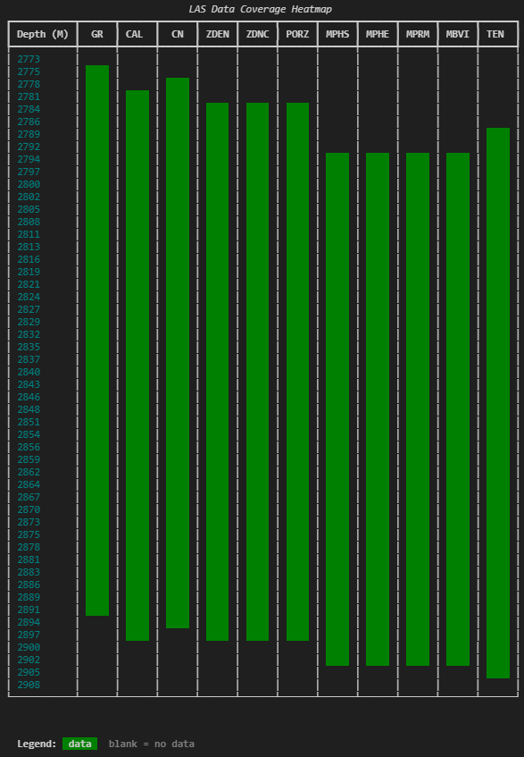
3.2.13.4 Finding and reporting gaps
The heatmap provides visual information, but specifics matter. A companion function identifies exact start/stop depths and gap locations.
def find_gaps(depth_index, series, min_gap_samples=3):
"""Find data start, stop, and gaps for a single curve."""
valid = series.notna().to_numpy()
if not valid.any():
return None, None, []
depths = depth_index.to_numpy()
valid_depths = depths[valid]
start = float(valid_depths[0])
stop = float(valid_depths[-1])
in_range = (depths >= start) & (depths <= stop)
mask = ~valid & in_range
gaps = []
i = 0
n = len(mask)
while i < n:
if mask[i]:
j = i
while j < n and mask[j]:
j += 1
if (j - i) >= min_gap_samples:
gaps.append((float(depths[i]), float(depths[j - 1])))
i = j
else:
i += 1
return start, stop, gapsThe function ignores data before the first valid sample or after the last — those aren’t gaps, they’re just where the curve starts and stops.
3.2.13.5 Summary table
dfi = df[curves].sort_index()
summary = Table(
title="Curve Coverage Summary",
show_header=True,
header_style="bold",
)
summary.add_column("Curve", style="cyan", no_wrap=True)
summary.add_column(f"Start{unit_label}", justify="right")
summary.add_column(f"Stop{unit_label}", justify="right")
summary.add_column("Coverage", justify="right")
summary.add_column("Gaps", no_wrap=False)
for c in curves:
start, stop, gaps = find_gaps(dfi.index, dfi[c])
total_valid = int(dfi[c].notna().sum())
total_samples = len(dfi)
coverage_pct = (total_valid / total_samples * 100) if total_samples else 0
if start is None:
summary.add_row(c, "-", "-", "0%", "[red]No data[/red]")
continue
gap_text = (
", ".join(f"{top:.1f}-{bot:.1f}" for top, bot in gaps)
if gaps
else "[green]None[/green]"
)
summary.add_row(
c,
f"{start:.1f}",
f"{stop:.1f}",
f"{coverage_pct:.0f}%",
gap_text,
)
console.print(summary)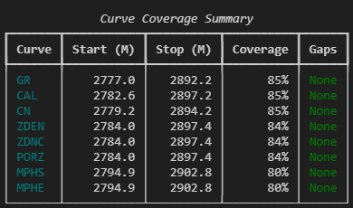
This kind of output doesn’t replace log plots or statistical analysis. But it occupies a useful gap between loading a file and starting interpretation. It answers critical questions like:
- Does this curve actually have data across the interval I care about?
- Are there gaps I need to deal with before splicing or merging?
- Which curves share the same coverage pattern, and which don’t?
- Is that “85% complete” curve actually missing data right where it matters?
These are the kinds of things that, if you don’t check explicitly, tend to show up later as confusing plot behaviour or unexpected nulls in a calculation.
3.2.14 Converting CSV Files to LAS with LASIO
Well log data can be delivered in a variety of formats (DLIS, LAS, CSV, ASC etc.). There may be occasions where you end up with a CSV file containing well log measurements and you want to convert it to a LAS file. Using the lasio library, this is straightforward.
If you prefer, you can watch the video version of this on my YouTube channel.
3.2.14.1 Loading the CSV file
First, load the CSV file using pandas:
import lasio
import pandas as pd
data = pd.read_csv('Data/VOLVE_15_9-19.csv')
data.head()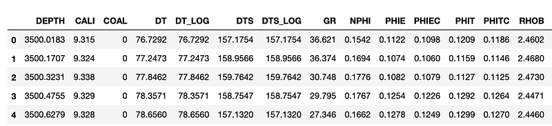
We can see that we have 18 columns within the dataframe, and a mixture of well log measurements.
To ensure that the data is all numeric and to understand how many nulls are present within the data we can call upon .info(). This is not a necessary step, but it does allow us to check that the columns are numeric (either float64 or int64).
data.info()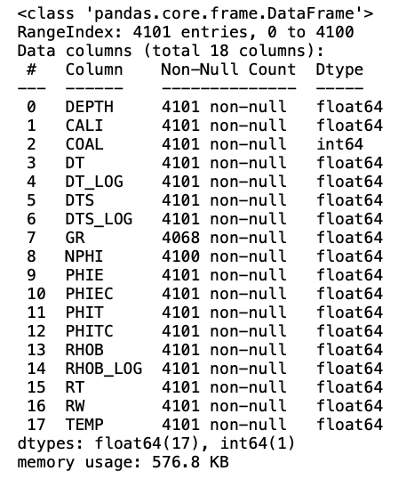
3.2.14.2 Creating an empty LAS object
Before we can transfer our data from CSV to LAS, we first need to create a blank LAS file. This is achieved by calling lasio.LASFile():
las_file = lasio.LASFile()
las_file.header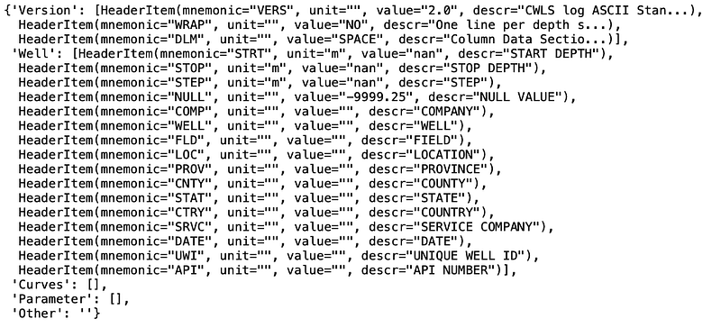
The header information is empty. We can also confirm that we have no data within the file by calling las_file.curves, which will return an empty list.
3.2.14.3 Setting up the LAS file metadata
Now that we have a blank LAS object to work with, we need to add information to the header.
The first step is to create a number of variables that we want to fill in. Doing it this way, rather than passing them directly into the HeaderItem functions, makes it easier to change them in the future and also makes the code more readable.
well_name = 'Random Well'
field_name = 'Random Field'
uwi = '123456789'
country = 'Random Country'
las_file.well['WELL'] = lasio.HeaderItem('WELL', value=well_name)
las_file.well['FLD'] = lasio.HeaderItem('FLD', value=field_name)
las_file.well['UWI'] = lasio.HeaderItem('UWI', value=uwi)
las_file.well['CTRY'] = lasio.HeaderItem('CTRY', value=country)Once we have done this we can call upon the header again and see that the values for well name, UWI, country and field name have all been updated.
las_file.header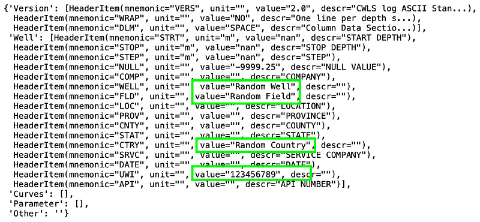
3.2.14.4 Adding a depth curve
To add curves to the file we can use the add_curve function and pass in the data and units.
This example shows how we can add a single curve to the file called DEPT. Note that if adding the main depth data, it does need to go in as DEPT rather than DEPTH.
las_file.add_curve('DEPT', data['DEPTH'], unit='m')3.2.14.5 Writing the remaining curves
To make things easier, we can create a list containing the measurement units for each well log curve. Note that this does include the units for the depth measurement.
units = ['m',
'inches',
'unitless',
'us/ft',
'us/ft',
'us/ft',
'us/ft',
'API',
'v/v_decimal',
'v/v_decimal',
'v/v_decimal',
'v/v_decimal',
'v/v_decimal',
'g/cm3',
'g/cm3',
'ohm.m',
'ohm.m',
'degC']We can then loop through each of the columns within the dataframe along with the units list. This is achieved using the Python zip function.
As we already have depth within our LAS file, we can skip this column by checking the column name.
for col, unit in zip(data.columns, units):
if col != 'DEPTH':
las_file.add_curve(col, data[col], unit=unit)When we check the curves attribute, we can see that we have all of our curves and they all have the appropriate units. We can also see from the data.shape part of the listing that we have 4101 values per curve, which confirms we have data.
las_file.curves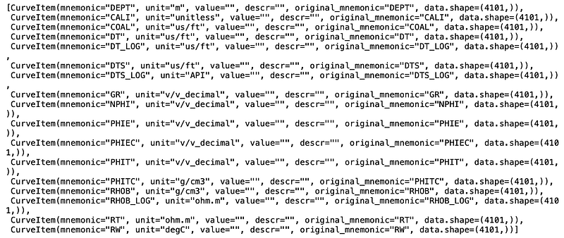
We can confirm that we have values by calling upon one of the curves. In the example below, GR returns an array containing the Gamma Ray values, which match the values in the dataframe presented earlier.
las_file['GR']array([ 36.621, 36.374, 30.748, ..., -999. , -999. , -999. ])3.2.14.6 Exporting the LAS file
Once we are happy with the LAS file, we can export it and use it in any other software package.
las_file.write('OutputLAS_FINAL.las')Once you have created a blank LASFile object in lasio, you can manually update the header items with the correct metadata and add the curves with the correct values. This makes the CSV to LAS conversion a simple and repeatable process.
3.2.15 Loading Multiple LAS Files
When working with well log data we often need to work with more than just a single well. Having data from multiple wells in a single dataframe allows us to visualise, compare, and prepare data across an entire field or project. It also makes it much easier to prepare data for machine learning workflows.
In this section, we will see how to load multiple LAS files from a folder into a single pandas dataframe.
The data used in the examples below originates from the publicly accessible Netherlands NLOG Dutch Oil and Gas Portal.
3.2.15.1 Setting up the libraries
For loading multiple LAS files, we will use lasio for reading the files, os to read files from a directory, and pandas to store the data. For visualisation, we will use matplotlib and seaborn.
import lasio
import pandas as pd
import os
import matplotlib.pyplot as plt
import seaborn as snsNext we set up an empty list which will hold all of our LAS file names, and define the path to the folder where the files are stored.
las_file_list = []
path = 'Data/15-LASFiles/'We can use os.listdir to see the contents of the folder:
files = os.listdir(path)
files['L05B03_comp.las',
'L0507_comp.las',
'L0506_comp.las',
'L0509_comp.las',
'WLC_PETRO_COMPUTED_1_INF_1.ASC']3.2.15.2 Reading the LAS files
We have 4 LAS files and 1 ASC file in the folder. As we are only interested in the LAS files, we need to loop through each file and check if the extension is .las. To catch cases where the extension is capitalised (.LAS instead of .las), we call .lower() to convert the file extension string to lowercase.
Once we have identified that the file ends with .las, we add the directory path to the file name. This is required for lasio to pick up the files correctly. If we only passed the file name, the reader would be looking in the same directory as the script or notebook, and would fail as a result.
for file in files:
if file.lower().endswith('.las'):
las_file_list.append(path + file)
las_file_list['Data/15-LASFiles/L05B03_comp.las',
'Data/15-LASFiles/L0507_comp.las',
'Data/15-LASFiles/L0506_comp.las',
'Data/15-LASFiles/L0509_comp.las']3.2.15.3 Appending individual LAS files to a pandas dataframe
There are a number of different ways to concatenate and append data to dataframes. Here we will use a simple method of creating a list of dataframes, which we will concatenate together.
First, we create an empty list using df_list=[]. Then we loop through the las_file_list, read each file with lasio and convert it to a dataframe.
It is useful to know where the data originated. If we did not retain this information, we would end up with a dataframe full of data with no information about its origins. To do this, we can create a new column and assign the well name value from the LAS header: lasdf['WELL']=las.well.WELL.value. This will make it easy to work with the data later on.
Additionally, as lasio sets the dataframe index to the depth value from the file, we can create an additional column called DEPTH.
df_list = []
for lasfile in las_file_list:
las = lasio.read(lasfile)
lasdf = las.df()
lasdf['WELL'] = las.well.WELL.value
lasdf['DEPTH'] = lasdf.index
df_list.append(lasdf)We can now create a working dataframe containing all of the data from the LAS files by concatenating the list:
workingdf = pd.concat(df_list, sort=True)
workingdf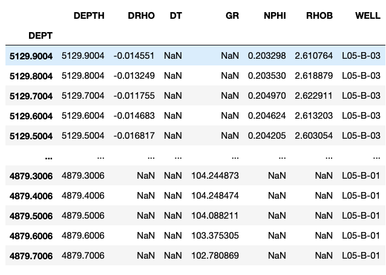
We can confirm that we have all the wells loaded by checking for the unique values within the WELL column:
workingdf['WELL'].unique()array(['L05-B-03', 'L05-07', 'L05-06', 'L05-B-01'], dtype=object)If our LAS files contain different curve mnemonics, which is often the case, new columns will be created for each new mnemonic that is not already in the dataframe.
3.2.15.4 Creating quick data visualisations
Now that we have our data loaded into a single pandas dataframe, we can create some quick multi-plots to gain insight into the data. We will do this using crossplots, a boxplot, and a Kernel Density Estimate (KDE) plot.
First, we group the dataframe by the well name:
grouped = workingdf.groupby('WELL')Crossplots per well
Crossplots (also known as scatterplots) are used to plot one variable against another. For this example we will use a neutron porosity vs bulk density crossplot, which is a very common plot used in petrophysics.
fig, axs = plt.subplots(2, 2, figsize=(10,10))
for (name, df), ax in zip(grouped, axs.flat):
df.plot(kind='scatter', x='NPHI', y='RHOB',
ax=ax, c='GR', cmap='jet', vmin=0, vmax=150)
ax.set_xlim(-0.15, 1)
ax.set_ylim(3, 1)
ax.set_title(name)
ax.grid(True)
ax.set_axisbelow(True)
plt.tight_layout()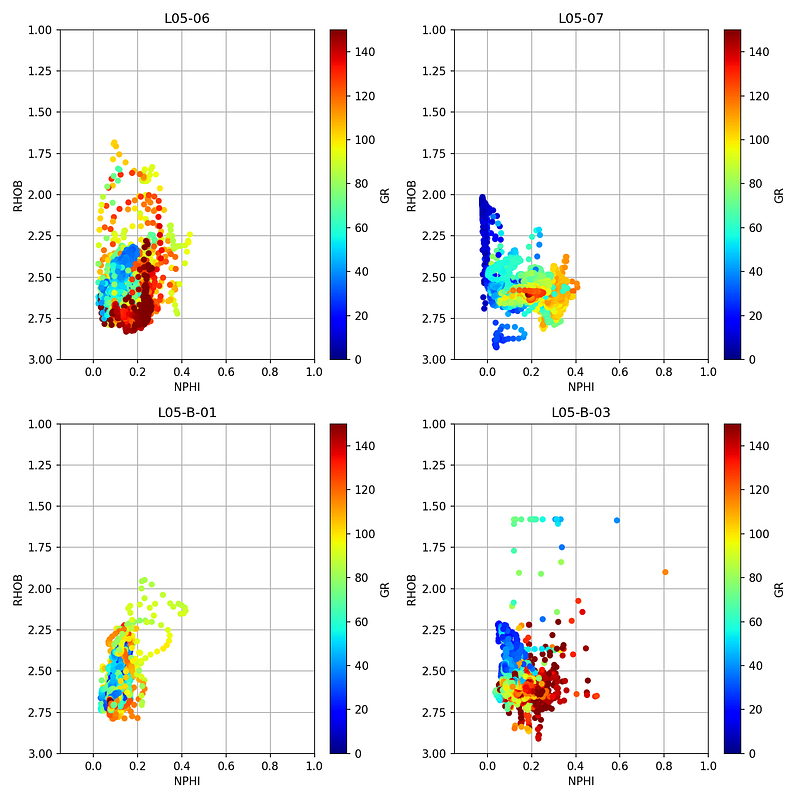
Boxplot of gamma ray per well
We can display a boxplot of the gamma ray curve from all wells using seaborn. The hue parameter splits the data up into individual boxes, each with its own colour.
sns.catplot(x='WELL', y='GR', hue='WELL', data=workingdf, kind='box')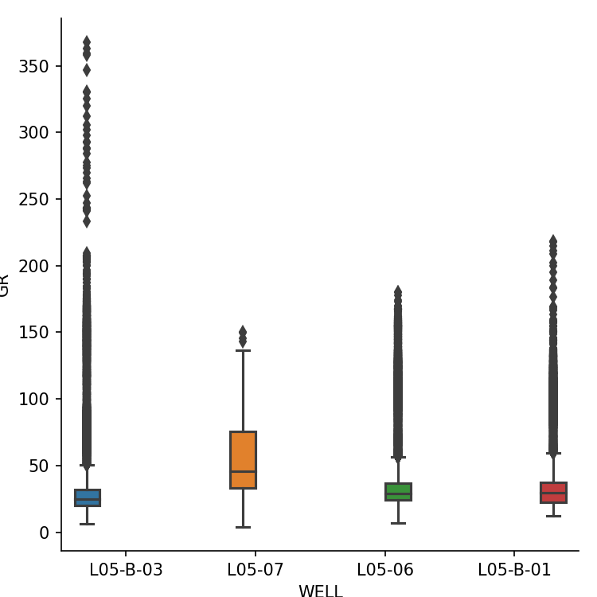
Histogram (Kernel Density Estimate)
We can view the distribution of values by using a Kernel Density Estimate plot, which is similar to a histogram.
workingdf.groupby('WELL').GR.plot(kind='kde')
plt.xlim(0, 150)
plt.ylim(0, 0.05)
plt.legend()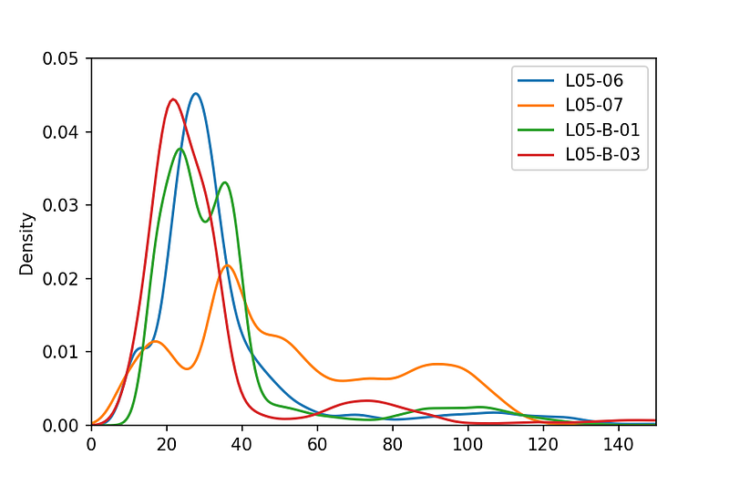
Once you have multiple LAS files loaded into a single dataframe, you can easily call upon matplotlib and seaborn to make quick and easy to understand visualisations of the data across multiple wells.
3.3 DLIS Files
The Digital Log Interchange Standard (DLIS) is a structured binary format for storing well information and log data. It was developed by Schlumberger in the late 1980s and later published by the American Petroleum Institute in 1991 to provide a standardised format.
Working with DLIS can be awkward. The standard is decades old, and different vendors often add their own twists with extra data structures or object types.
A DLIS file typically holds large amounts of well metadata along with the actual log data. The data itself lives inside Frames, these are table-like objects representing passes, runs, or processing stages (e.g. Raw or Interpreted). Each frame has columns called channels, which are the individual logging curves. Channels can be single- or multi-dimensional, depending on the tool and measurement.
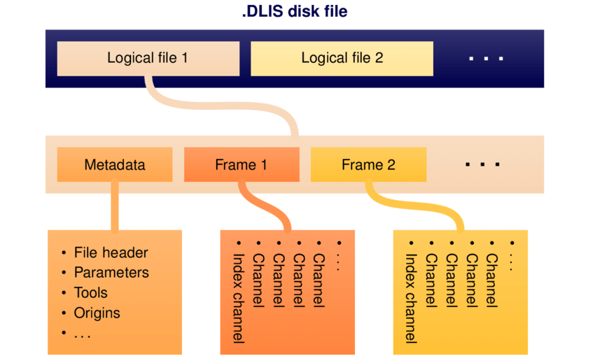
DLISIO is a python library that has been developed by Equinor ASA to read DLIS files and Log Information Standard79 (LIS79) files. Details of the library can be found here.
3.3.1 Using DLISIO
The library can be installed by using the following command:
pip install dlisio3.3.2 Opening a DLIS File
Like most binary formats, you cannot just open a DLIS file in a text editor and scroll through the contents like we can with LAS and CSV files. DLISIO handles the decoding of the binary file for you.
The first step when working with DLISIO is to load the file. A physical DLIS file can contain multiple logical files, so we use the following syntax to place the first logical file into f and any subsequent ones into tail.
from dlisio import dlis
import pandas as pd
f, *tail = dlis.load("NLOG_LIS_LAS_7857_FMS_DSI_MAIN_LOG.DLIS")We can check the contents by calling f and tail:
print(f)
print(tail)LogicalFile(00001_AC_WORK)
[]If tail is an empty list, there are no other logical files within the DLIS.
To view the high-level contents of the file we can use the .describe() method. This returns information about the number of frames, channels, and objects within the logical file.
f.describe()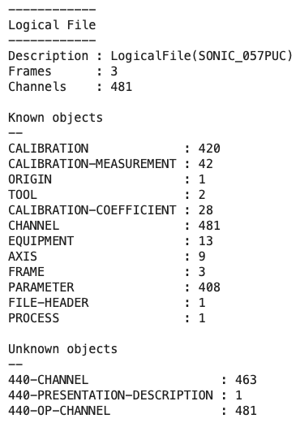
From this we can see the file has 4 frames and 484 channels (logging curves), along with a number of known and unknown objects.
3.3.3 Viewing the file’s metadata
DLIS files contain rich metadata about the data origin, including field and well information, the company that acquired the data, and the tools and services used during the logging operation.
We can access this origin information by unpacking f.origins. Data may occasionally originate from multiple sources, so we unpack into two variables to account for this.
origin, *origin_tail = f.origins
origin.describe()This provides details about the field, well, and other file information.
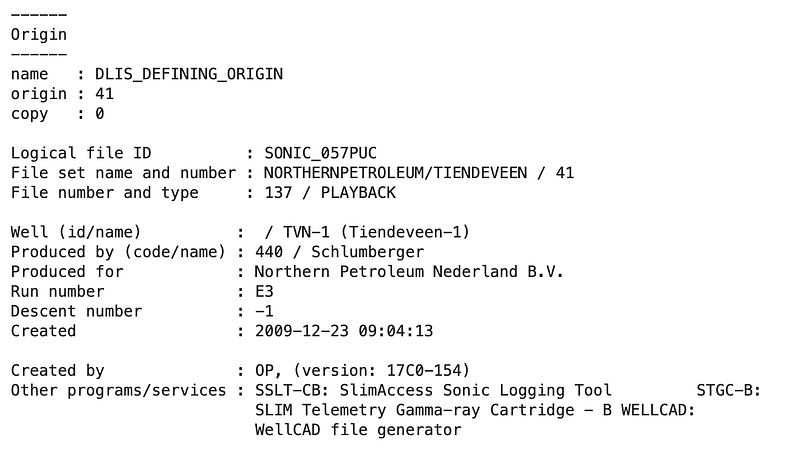
The origin object gives us access to key properties such as origin.well_name, origin.field_name, and origin.company. These can be useful when building summary tables or when converting DLIS data to other formats like LAS.
3.3.4 Exploring frames
Each logical file is organised into frames. You can think of a frame as a table that stores log data from a particular pass, run, or processing stage. For example, you might have one frame for the raw field data and another for an interpreted or processed version of the same run.
We can loop through the frames and print their key properties:
for frame in f.frames:
for channel in frame.channels:
if channel.name == frame.index:
depth_units = channel.units
print(f'Frame Name: \t\t {frame.name}')
print(f'Index Type: \t\t {frame.index_type}')
print(f'Depth Interval: \t {frame.index_min} - {frame.index_max} {depth_units}')
print(f'Depth Spacing: \t\t {frame.spacing} {depth_units}')
print(f'Direction: \t\t {frame.direction}')
print(f'Num of Channels: \t {len(frame.channels)}')
print(f'Channel Names: \t\t {str(frame.channels)}')
print('\n\n')This will list all the frames available. A file might only have one frame, but it is common to see several. Understanding which frame you need is an important first step before pulling out data.
To make things nicer to view and create code that can be reused, we can create a function that builds a summary pandas dataframe for each frame.
def frame_summary(dlis_file):
"""
Generates a summary DataFrame of the frames contained
within a given DLIS file.
"""
temp_dfs = []
for frame in dlis_file.frames:
for channel in frame.channels:
if channel.name == frame.index:
depth_units = channel.units
if depth_units == "0.1 in":
multiplier = 0.00254
else:
multiplier = 1
df = pd.DataFrame(
data=[[frame.name,
frame.index_type,
frame.index,
(frame.index_min * multiplier),
(frame.index_max * multiplier),
(frame.spacing * multiplier),
frame.direction,
len(frame.channels),
[channel.name for channel in frame.channels]]],
columns=['Frame Name', 'Frame Index Type', 'Index Curve',
'Index Min', 'Index Max', 'Spacing', 'Direction',
'Number of Channels', 'Channel Names'])
temp_dfs.append(df)
final_df = pd.concat(temp_dfs)
return final_df.reset_index(drop=True)
frame_summary(f)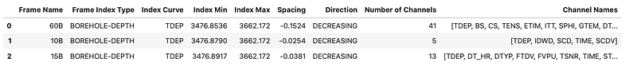
This gives us a clear view of the index type, depth range, spacing, logging direction, and the number of channels in each frame.
3.3.5 Inspecting channels
Within each frame you will find the actual channels — the individual logging curves such as GR, RHOB, NPHI, and so on. Each channel is stored as a column in the frame’s table, with values indexed by depth or time.
We can access key properties of individual channels:
channel = f.object('CHANNEL', 'DTCO')
print(f'Name: \t\t{channel.name}')
print(f'Long Name: \t{channel.long_name}')
print(f'Units: \t\t{channel.units}')
print(f'Dimension: \t{channel.dimension}')Name: DTCO
Long Name: Delta-T Compressional
Units: us/ft
Dimension: [1]The dimension tells us whether the channel contains single values (1D) or array data (multi-dimensional), which is important when converting to dataframes later.
3.3.6 Exploring parameters and tools
DLIS files can contain a large number of parameters relating to the logging environment, tool setup, and processing. To make these easier to explore, we can create a reusable helper function that builds a summary dataframe from any DLIS object collection.
def summary_dataframe(object, **kwargs):
df = pd.DataFrame()
for i, (key, value) in enumerate(kwargs.items()):
list_of_values = []
for item in object:
try:
x = getattr(item, key)
list_of_values.append(x)
except:
list_of_values.append('')
continue
df[value] = list_of_values
return df.sort_values(df.columns[0])With this function, we can quickly summarise the parameters stored in the file:
param_df = summary_dataframe(f.parameters,
name='Name',
long_name='Long Name',
values='Value')
param_df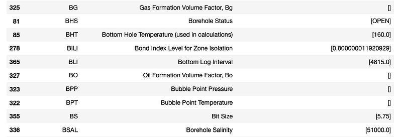
From this table we can see parameters such as bottom log interval, borehole salinity and bottom hole temperature.
We can also view a summary of the logging tools that acquired the data:
tools = summary_dataframe(f.tools,
name='Name',
description='Description')
tools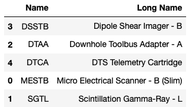
And similarly, we can create a summary of all channels across the file, including their units and the frame they belong to:
channels = summary_dataframe(f.channels,
name='Name',
long_name='Long Name',
dimension='Dimension',
units='Units',
frame='Frame')
channels3.3.7 Converting channels to pandas dataframes
Once we have explored the file structure and identified the data we need, the next step is to extract the channel data into a more familiar format. Converting DLIS channels to pandas dataframes makes data analysis and exploration much more accessible.
For frames containing only single-dimensional channels, we can convert the data directly:
df = pd.DataFrame(f.frames[1].curves())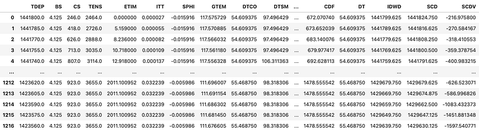
However, when our channels contain array data (for example, borehole image data or acoustic waveforms), the above approach will fail with an error that the Data must be 1-dimensional.
One way to deal with this is to exclude any channels that contain arrays and only create the dataframe with single-dimensional data:
df = pd.DataFrame()
for frame in f.frames:
for channel in frame.channels:
if channel.dimension[0] == 1:
data = channel.curves()
df[channel.name] = pd.Series(data)Be aware that you may have multiple sample rates within the same frame, and this should be explored thoroughly before converting.
You will often find that the depth column (TDEP) contains values in units of 0.1 inches. To convert this to metres, we need to multiply by 0.00254:
df['TDEP'] = df['TDEP'] * 0.00254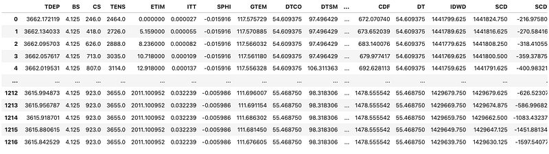
To tidy the dataframe up, we can sort the depth column in ascending order so that we go from the shallowest measurement at the top to the deepest at the bottom:
df = df.sort_values(by='TDEP', ascending=True)3.3.8 Converting DLIS to LAS
As DLIS files can be complex and contain vast numbers of logging curves and arrays, it can be useful to extract a selection of the data and convert it to the simpler LAS format. This makes it easier to work with in other software and reduces file size.
To do this, we need both dlisio and lasio:
from dlisio import dlis
import lasioFirst, we create a blank LAS file object and populate the header using information from the DLIS origin:
las_file = lasio.LASFile()
origin, *origin_tail = f.origins
well_name = origin.well_name
field_name = origin.field_name
operator = origin.company
las_file.well['WELL'] = lasio.HeaderItem('WELL', value=well_name)
las_file.well['FLD'] = lasio.HeaderItem('FLD', value=field_name)
las_file.well['COMP'] = lasio.HeaderItem('COMP', value=operator)Next, we define which curves we want to extract. Note that we need to include the depth curve (TDEP):
columns_to_extract = ['TDEP', 'BS', 'DT', 'DTSM', 'VPVS']We can then loop through the channels in the selected frame and add matching curves to our LAS file. For the depth curve, we convert the name to DEPT and handle the unit conversion from 0.1 inches to metres:
frame = f.frames[0]
for channel in frame.channels:
if channel.name in columns_to_extract:
curves = channel.curves()
if channel.name == 'TDEP':
channel_name = 'DEPT'
description = 'DEPTH'
if channel.units == '0.1 in':
curves = curves * 0.00254
unit = 'm'
else:
unit = channel.units
else:
description = channel.long_name
channel_name = channel.name
unit = channel.units
las_file.append_curve(
channel_name,
curves,
unit=unit,
descr=description
)We can check that our curve information has been passed over correctly:
las_file.curves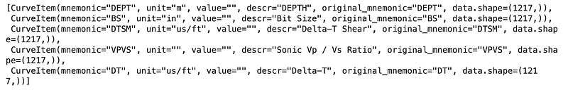
Once we are satisfied, we can write the file:
las_file.write('output.las')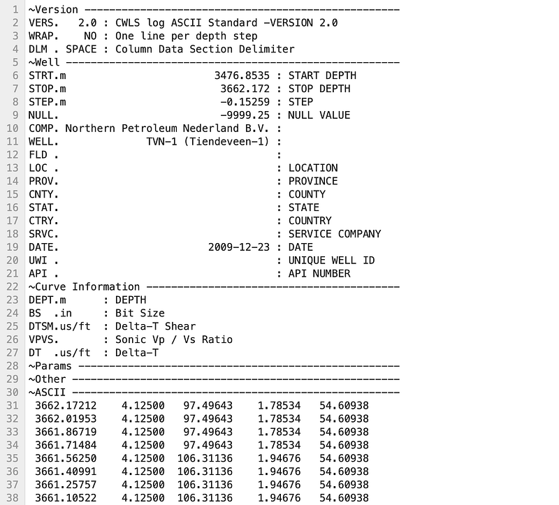
You may notice that the header section still has some missing information. This can be edited directly within a text editor, or you can use additional code to populate those fields.
The process illustrated here mainly applies to single-dimension logging curves. Any array data or high-resolution data needs to be assessed differently before conversion.
3.4 Combining Formation Data with Well Log Measurements
When working with subsurface data we often deal with datasets that have been sampled in different ways. For example, well log measurements are continuously recorded over intervals of the subsurface at regular increments (e.g. measurements every 0.1 m), whereas formation tops are single depth points.
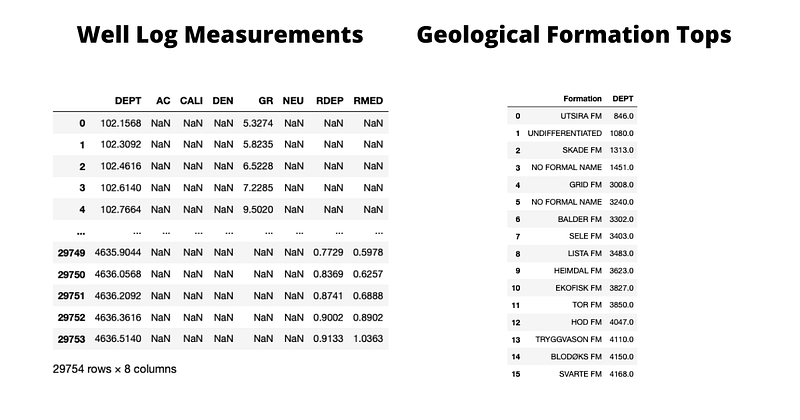
This means that if we want to integrate formation information into our well log dataframe, we need a way to map each discrete formation top to the continuous depth measurements. This section covers how to do that for both a single well and multiple wells.
3.4.1 Single Well: Merging Formation Tops with Well Log Data
3.4.1.1 Importing Libraries and Data
We will use lasio for loading well log data from a LAS file, and pandas for loading and storing formation data.
import lasio
import pandas as pdNext, we load the well log data. We call lasio.read() and pass in the file path, then convert the lasio object to a dataframe and reset the index so that depth becomes a regular column.
df_19SR = lasio.read('Data/15-9-19_SR_COMP.las').df()
df_19SR.reset_index(inplace=True)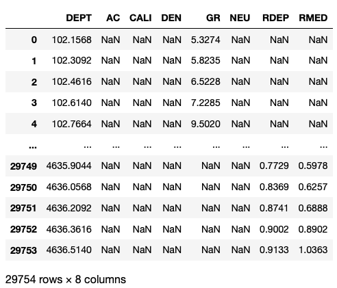
3.4.1.2 Loading Formation Data
Often the formation data is stored within a simple table in a CSV file, with the formation name and associated depth. We can use pd.read_csv() to load this. In this example, the file does not have a header row, so we assign column names using the names argument.
df_19SR_formations = pd.read_csv('Data/Volve/15_9_19_SR_TOPS_NPD.csv',
header=None,
names=['Formation', 'DEPT'])
df_19SR_formations['DEPT'] = df_19SR_formations['DEPT'].astype(float)
df_19SR_formations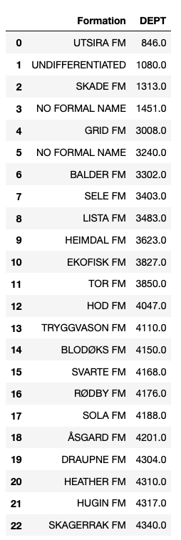
3.4.1.3 Merging the Data
Now that we have two dataframes, we need to combine them. We can create a function that checks each depth value and determines which formation should occur at that depth, then use the .apply() method to run it across the dataframe.
The function creates lists of the formation depths and names, then loops through each entry and checks for three conditions:
- If we are at the last formation in the list
- If we are at a depth before the first formation in the list
- If we are between two formation depths
def add_formations_to_df(depth_value:float) -> str:
formation_depths = df_19SR_formations['DEPT'].to_list()
formation_names = df_19SR_formations['Formation'].to_list()
for i, depth in enumerate(formation_depths):
# Check if we are at last formation
if i == len(formation_depths)-1:
return formation_names[i]
# Check if we are before first formation
elif depth_value <= formation_depths[i]:
return ''
# Check if current depth between current and next formation
elif depth_value >= formation_depths[i] and depth_value <= formation_depths[i+1]:
return formation_names[i]Once the function has been written, we can create a new column called FORMATION and apply the function to the DEPT column:
df_19SR['FORMATION'] = df_19SR['DEPT'].apply(add_formations_to_df)
df_19SR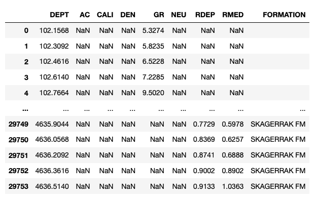
We can take a closer look at a specific depth range to verify the formation transitions are correct. For example, looking at depths between 4339 and 4341 m:
df_19SR.loc[(df_19SR['DEPT'] >= 4339) & (df_19SR['DEPT'] <= 4341)]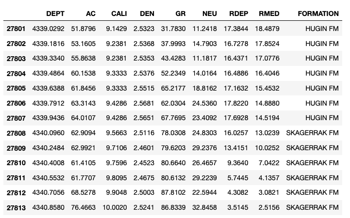
Here we can see that the Skagerrak Fm starts after 4340 m, and before that we have the Hugin Fm, confirming that the merge has worked correctly.
3.4.2 Multiple Wells: Integrating Formation Data Across a Dataset
When working with multiple wells, the process becomes more involved. We need to load multiple LAS files and formation CSVs, organise the formation data by well, and then apply a merge function that accounts for which well each row belongs to.
3.4.2.1 Importing Libraries
For this workflow we will be using lasio to load .las files, os to read files from a directory, pandas to work with dataframes, and csv to load formation data stored within CSV files.
import lasio as las
import os
import pandas as pd
import csv3.4.2.2 Loading Multiple LAS Files
Similar to what we covered in the earlier section on loading multiple LAS files, we iterate over a directory, read each .las file, add a WELL column from the header, and concatenate all the dataframes together.
directory = "Data/Notebook 36"
# Initialise empty list for dataframes
df_list = []
for file in os.listdir(directory):
if file.endswith('.las'):
f = os.path.join(directory, file)
# Convert LAS file to a DF
las_file = las.read(f)
df = las_file.df()
# Create a column for the Well Name
well_name = las_file.well.WELL.value
df['WELL'] = well_name
# Make sure depth is a column rather than an index
df = df.reset_index()
df = df.sort_values(['WELL', 'DEPT']).reset_index(drop=True)
df_list.append(df)
# Create a single dataframe with all wells
well_df = pd.concat(df_list)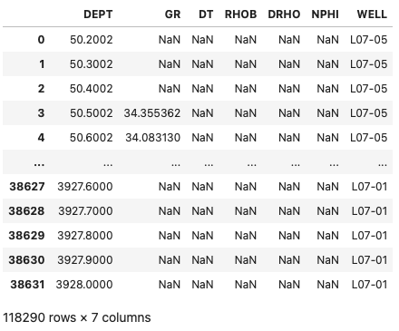
3.4.2.3 Loading Formation Tops from CSV Files
Formation top data is often stored within CSV files containing the formation name and the associated top depth. When working with multiple wells, each CSV file may also contain a Well column to identify which well the formation data belongs to.
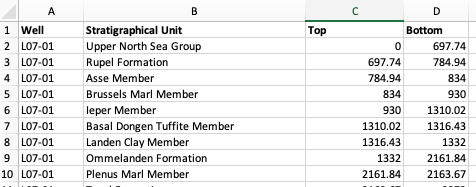
We loop over all .csv files in the directory, read each one with pd.read_csv(), and concatenate them together into a single formations dataframe.
# Initialise empty list for dataframes
df_formation_list = []
for file in os.listdir(directory):
if file.endswith('.csv'):
f = os.path.join(directory, file)
df = pd.read_csv(f)
df_formation_list.append(df)
# Combine all formation data into a single dataframe
formations_df = pd.concat(df_formation_list)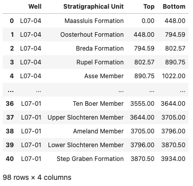
3.4.2.4 Creating a Dictionary of Formation Data
To make the merge process easier, we convert the formations dataframe into a nested dictionary keyed by well name. Within each well, the sub-dictionary has the formation depth as the key and the formation name as the value. This structure allows us to check whether a given depth falls between two formation tops for a specific well.
formations_dict = {k: f.groupby('Top')['Stratigraphical Unit'].apply(list).to_dict()
for k, f in formations_df.groupby('Well')}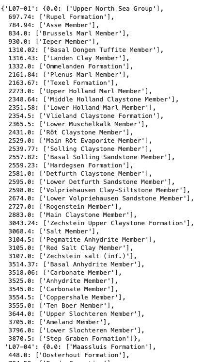
3.4.2.5 Merging Formation Data with Well Log Data
The merge function for multiple wells works similarly to the single well version, but takes both the depth and well name as parameters. It looks up the formation depths for the specified well in the dictionary, then determines which formation the current depth belongs to by checking edge cases: whether we are above the first formation, at the last formation, or between two formations.
def add_formation_name_to_df(depth, well_name):
formations_depth = formations_dict[well_name].keys()
# Need to catch if we are at the last formation
try:
at_last_formation = False
below = min([i for i in formations_depth if depth < i])
except ValueError:
at_last_formation = True
# Need to catch if we are above the first listed formation
try:
above_first_formation = False
above = max([i for i in formations_depth if depth > i])
except:
above_first_formation = True
if above_first_formation:
formation = ''
# Check if the current depth matches an existing formation depth
nearest_depth = min(formations_depth, key=lambda x:abs(x-depth))
if depth == nearest_depth:
formation = formations_dict[well_name][nearest_depth][0]
else:
if not at_last_formation:
if depth >= above and depth <below:
formation = formations_dict[well_name][above][0]
else:
formation = formations_dict[well_name][above][0]
return formationOnce the function is defined, we apply it row-by-row using pandas .apply() with a lambda that passes both the DEPT and WELL columns:
well_df['FORMATION'] = well_df.apply(lambda x: add_formation_name_to_df(x['DEPT'], x['WELL']), axis=1)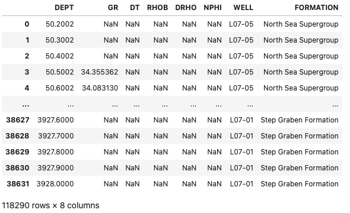
3.4.2.6 Checking the Results
When performing this kind of merge, it is essential to verify the results by checking specific depth ranges where formation transitions are expected.
well_df.loc[(well_df['WELL'] == 'L07-01') & (well_df['DEPT'] >= 929) & (well_df['DEPT'] <= 935)]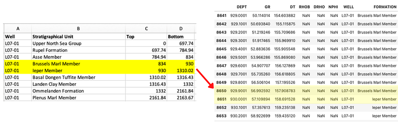
By comparing the formation transition depths in the original CSV data with those in the merged dataframe, we can confirm that the process has worked correctly. It is always wise to check multiple wells and intervals to be sure.
3.2.3.4 Comments and control characters
LAS uses two special characters at the start of a line:
#marks a comment~marks the start of a sectionEverything else is treated as content.